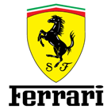
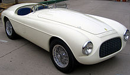
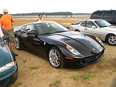

 Ferrari S.p.A. (кратко: Ferrari — рус. «Ферра́ри») — итальянская компания, выпускающая спортивные автомобили, базирующаяся в Маранелло. Основана в 1928 году Энцо Феррари как Scuderia Ferrari, компания спонсировала гонщиков и производила гоночные машины до 1947 года. С 1947 года начала выпуск «уличных» (англ. street-legal) спортивных автомобилей под маркой «Ferrari S.p.A.». На протяжении всей своей истории, компания участвует в различных гонках, особенно в Формуле-1, где она имеет наибольший успех. Эмблема «Феррари» — гарцующая лошадь на жёлтом фоне. Традиционный цвет автомобилей — красный, но компания выпускает автомобили и других цветов.
Компания (первоначальное название её было Auto Avio Costruzioni) была основана в 1929 году гонщиком,
конструктором и испытателем автомобилей «Альфа-Ромео» Энцо Феррари.

Первоначально она производила различное оборудование для автомобилей. Сделанные компанией автомобили
выпускались под маркой «Альфа-Ромео».
С этой компанией у Феррари был договор. Первый автомобиль, носящий уже собственно имя «Феррари» появился в
1946. Это была модель Ferrari 125,
с мощным 12-цилиндровым алюминиевым двигателем, призванная воплотить в жизнь мечту её создателя: придать
обыкновенному дорожному автомобилю
свойства гоночного без ущемления комфортабельности. В качестве торговой марки фирмы Энцо Феррари избрал
гарцующего жеребца на жёлтом фоне.
К концу 1947 существовали уже две модификации двигателя «Феррари», а его рабочий объём вырос у модели 166 с
1496 до 1995 куб. см.
В следующем году собственная команда «Феррари» впервые одержала победу в гонках Милле-Милья и Тарга-Флорио.
1949 год принес команде новый триумф в тех же соревнованиях,
а чуть позже победу в гонке «24 часа Ле-Мана».
В 1951 появляется этапная модель 340 America с двигателем, первоначально разработанным для Ferrari GT с
рабочим объёмом 4,1 литра.
В 1953 году эта же машина оснащается двигателем объёмом 4,5 литра и получает новое имя — 375 America. В том
же году «Феррари» представляет 250 Europa,
с трехлитровым двигателем.

Всего к началу 1954 Энцо Феррари выпустил около 200 своих машин в эксклюзивно-дорожном варианте и 250
гоночных моделей.
Создавая свои дорожные автомобили, Феррари обращался к разным дизайнерским компаниям, делая свои модели
непохожими друг на друга.
Но модель 250 GT 1954 года положила начало многолетнему и плодотворнейшему сотрудничеству с компанией
«Пининфарина»,
как нельзя лучше подстроившей свои кузова к новым короткобазным шасси, у которых ведущая задняя ось была
подвешена на пружинах.
1958 Ferrari 250 GT California Spyder
Уже модель 250 GT выпустили не только как купе, но и кабриолет, а появившаяся в 1959 году 250 GT California,
производившаяся на заказ, — яркий образец открытой
модели 250 GT спортивного типа. В 1958 «Пининфарина» создала для модели 250 GT кузова специфически угловатой
формы: эти автомобили, оснащенные 12-цилиндровым двигателем,
и внешне производили впечатление огромной мощи, идеально послушной любым желаниям своих владельцев.
Модели 375 America и сменившая её в 1956 410 Super America (их было выпущено всего 14) предназначались для
«сильных мира сего»: их дизайн навевал ощущение силы и
уверенности в себе.
С 1957 по 1962 год выпускался видоизмененный «Феррари 250 GT California» с хищно заостренным профилем и
съемной крышей. Свою первую победу эта машина одержала в
гонках Tourist Trophy 1960 года на трассе Гудвуд.